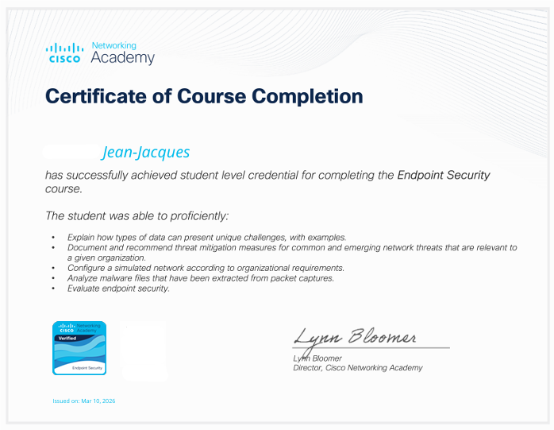
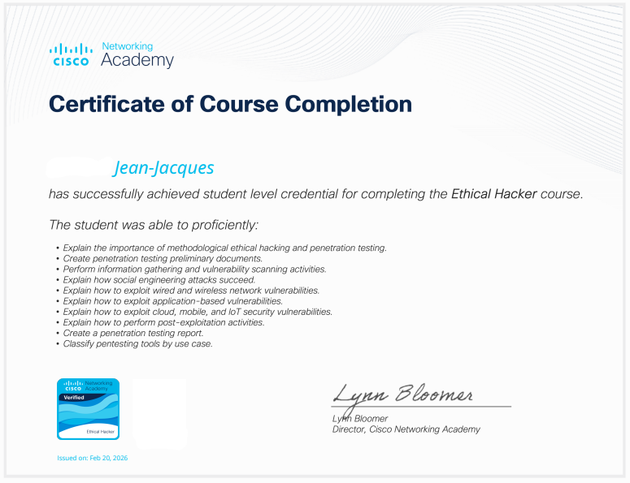

Bienvenue sur mon portfolio professionnel.
Ce site présentera progressivement mes compétences, mes projets, mes certifications et mon parcours.
Mes projets Contact
Passionné par l'informatique, je me suis reconverti après plusieurs années comme contrôleur de gestion : j'ai amorcé ce nouveau parcours avec la formation TSSR (Technicien Supérieur Systèmes & Réseaux, niveau 5), avant d'enchaîner avec l'AIS (Administrateur d'Infrastructures Sécurisées, niveau 6).
J'ai mis ces compétences en pratique en RUN (exploitation quotidienne, maintien en condition opérationnelle) et BUILD (projets d'évolution et de sécurisation de l'infrastructure), au sein d'un environnement médical exigeant.
Je continue aujourd'hui de progresser via des projets personnels, des laboratoires techniques et des formations.
Windows Server dont Active Directory, GPO, AGDLP, DFS, DNS, DHCP, WSUS
Linux (Debian/Ubuntu) dont OpenSSH, Apache/Nginx, Samba AD, Samba (gestion de fichiers), Bind9, dhcp-server, Cron, Nagios, Nextcloud
Modèle OSI, TCP/IP
DNS, DHCP, ARP, SSL/TLS
OSPF, RIPv2, EIGRP, (formation TSSR/AIS)
POC réalisé pour mon mémoire AIS :
Apache Syncope
Keycloak
LemonLDAP::NG
FusionDirectory
Cette section présentera prochainement les principaux projets réalisés autour de Windows Server, Linux, Active Directory, PowerShell, Azure, Docker et d'autres technologies.
Contexte : Mise en place d'accès VPN sécurisés et distants entre plusieurs environnements du plateau technique de formation (serveur dédié, nœud Proxmox, serveur Hyper-V, serveur OpenVPN et WireGuard), incluant la gestion des clés SSH et la résolution d'incidents d'accès.
Technologies : WireGuard, OpenVPN, SSH, Proxmox
Ce que j'en retiens : configuration de peers VPN et utilisation d'OpenVPN pour délimiter clairement les droits d'accès selon les profils (stagiaires/formateurs), avec une VM Proxmox dédiée à chaque VPN (OpenVPN et WireGuard). Rechargement à chaud des configurations WireGuard (wg syncconf, fichier wg0.conf) sans interrompre les tunnels actifs, contrôle des connexions actives, et résolution d'un lock-out via la console noVNC de Proxmox.
Contexte : Installation et administration d'un serveur Windows Server 2019 en édition Core, virtualisé sous Hyper-V (Generation 2, mémoire dynamique) — 2019 étant la dernière version disposant d'un hyperviseur de type 1 dédié (Hyper-V Server).
Technologies : Hyper-V, Windows Server 2019 Core, Windows Admin Center (WAC)
Ce que j'en retiens : administration en ligne de commande dans un environnement Windows minimaliste et plus léger (sans interface graphique), avec restauration d'accès au pare-feu et à WAC après blocage.
Contexte : Analyse d'un échantillon du malware Emotet dans le cadre d'un exercice de formation, afin d'en comprendre le comportement et les mécanismes de propagation.
Technologies : VirusTotal, ANY.RUN
Ce que j'en retiens : identification des indicateurs de compromission via VirusTotal et observation du comportement dynamique de l'échantillon en bac à sable (sandbox) avec ANY.RUN — une première approche concrète de l'analyse de menaces.
Azure : Key Vault, Microsoft Sentinel, import Entra ID, RBAC/IAM.
PRA/PCA (test de restauration), audit de sécurité formalisé (Lynis).
Gestion de projet.


Titre professionnel niveau 6 (RNCP), établi à Lyon le 25 janvier 2024.
Document source disponible sur demande.
Titre professionnel niveau 5, établi à Lyon le 25 novembre 2021.
Document source disponible sur demande.
Vous pouvez me contacter directement via le formulaire ci-dessous.
Ouvert à toute proposition de collaboration sur la région lyonnaise ou à distance.